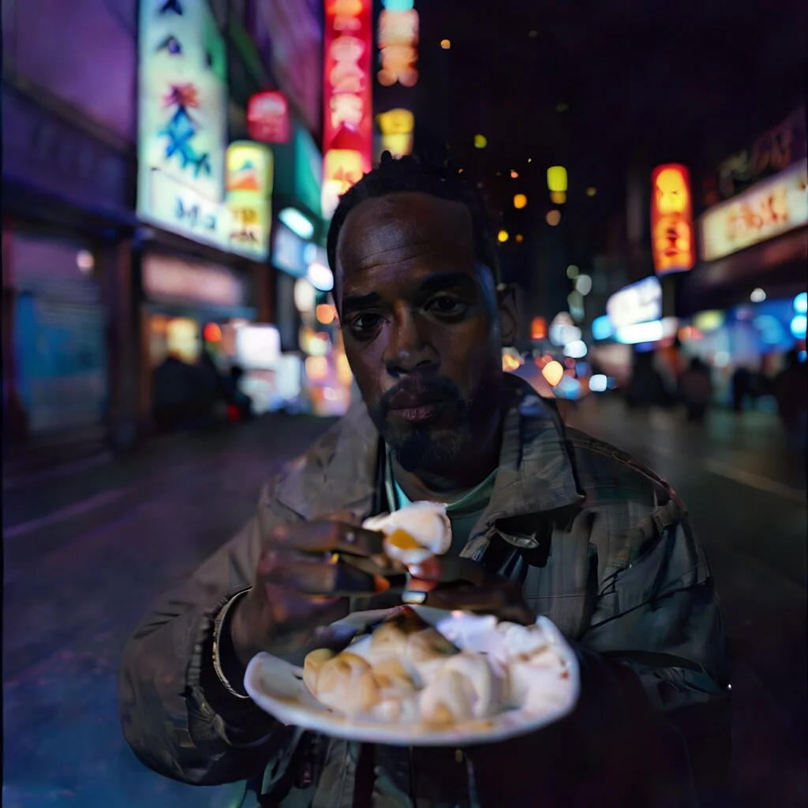

← Base
ES-LoRA →
Evolution Strategies
RL
Text-to-image
Post-training
ES-EGGROLL: post-training text-to-image with evolution strategies
Low-rank Evolution Strategies from "Evolution Strategies at the Hyperscale" (Sarkar et al., 2025), adapted for text-to-image alignment. The generator stays frozen; only a LoRA is optimized, from black-box rewards (PickScore as the objective, CLIP / aesthetic / no-artifacts as diagnostics), at near inference throughput and without diffusion backprop.
PartiPrompts, overall means same seeds, deltas vs. base
| Model | CLIP text ↑ | no artifacts ↑ | PickScore ↑ |
|---|---|---|---|
| SanaOneStep_Base | 0.6592 | 0.3859 | 22.3220 |
| SanaOneStep_eggroll | +0.00190.6611 | +0.00400.3899 | +0.179322.5013 |
| SanaTwoStep_Base | 0.6614 | 0.3926 | 22.8059 |
Aesthetic is flat across all three (0.5965–0.5978).